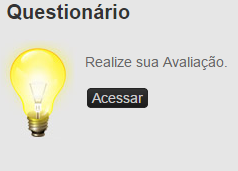
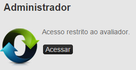
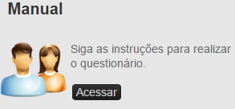
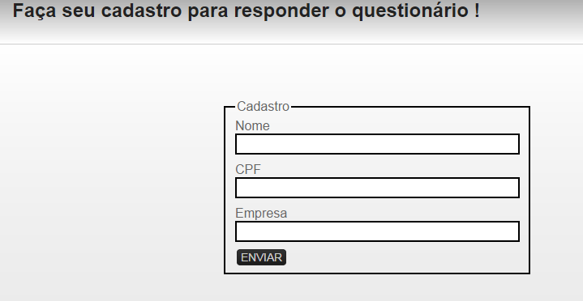
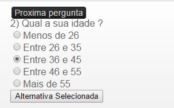
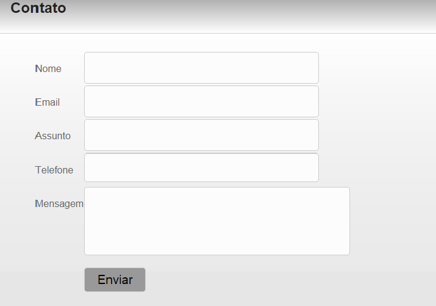

1 - Tela Principal
A tela principal você encontra os menus de acesso às funcionalidades e texto explicativo sobre o objetivo do Risk Assessment

Ao clicar em Acessar você será designado a pagina de cadastro para realizar as perguntas do Risk Assessment.

Feito para Engenheiros e técnicos de segurança, cadastrados pelos administradores do site risk assessment, usuários cadastrados poderão realizar consultas e imprimir relatórios.

O Conteúdo deste documento pode ser obtido através do acesso ao Manual do site. Para mapa de site e obtenção do conhecimento sobre a ferramenta Risk Assessment.
2 - Sobre
O software Risk assessment é um auxilio, que conta com a ajuda dos colaboradores e da estatística para ajudar na avaliação de risco, a ideia do software é apresentar um questionário que será respondido pelo colaborador como exemplo: Local de trabalho, ferramentas de trabalho, quantidade de acidentes no local em um determinado espaço de tempo entre outras perguntas, estas respostas terão um valor (peso), estes valores serão calculados em formulas de estatísticas que poderá apresentar a porcentagem de risco no local e do colaborados.
Segurança
Um breve histórico sobre relatos de segurança e principais matérias físico para ajudar na proteção do colaborador
3 - Questionário
Ao acessar o menu do questionário você terá que se cadastrar para registro no banco de dados e ajudar nas estatísticas do Risk Assessment. Para cadastrar Coloque seu nome, um CPF válido, e o nome da empresa que este empregado. Ao final clique em enviar para finalizar o cadastro.

Logo após se cadastrar irá aparecer uma sequência de 25 perguntas contendo 5 alternativa responda o que se encaixa com o seu perfil . Cada resposta possui um valor para ser contabilizado e gerado um valor.

4 - Contato
Aqui será um canal de contato direto com o e-mail dos administradores do Risk Assessment
